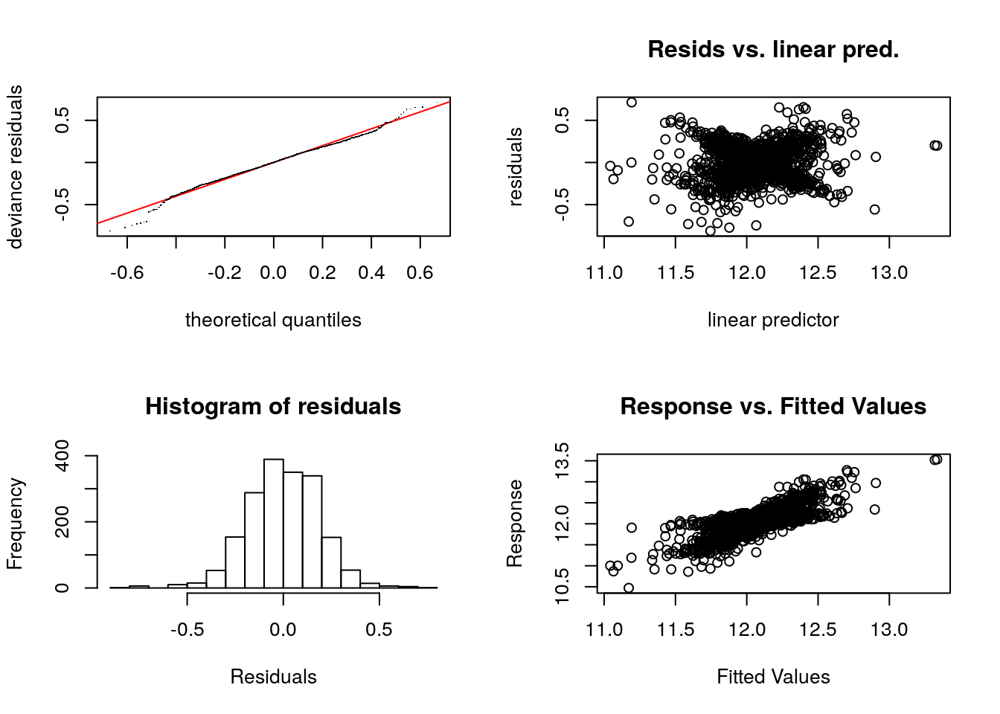

GAM
R Markdown
En primer lugar cargaremos los datasets obtenidos en las fases anteriores del modelado de datos.
## [1] 12Quitaremos de estos datasets posibles outliers que se hayan podido colar en pasos anteriores del procesamiento (casas muy baratos on una superficie exageradamente alta) y dividiremos en dataset en casas “baratas” (menos de 300000 dólares) y casas “caras” (más de 300000 dólares). Estos dataset serviran para extaer las variables más influyentes dentro de las poblaciones y crear a posteriori una regresión logística de tipo GAM para intentar discriminar casas caras de las baratas:
La idea de esta práctica es generar dos modelos y compararlos entre sí: - Un primer modelo GAM de regresión con la totalidad de la población y las variables más importantes de cara a la exactitud de la predicción. - Otro modelo basado en un clasificador que discrimine entre casas caras y baratas (se considera cara si su precio es mayor de 300000$) y cuyo resultado final será la media aritmética ponderada por la probabilidad del primer modelo entre otros dos modelos de regresión, uno para casas baratas y otro para casas caras.
Para hacer una primera estimación del modelo, generaremos varios ramdon-forest con los dataset obtenidos en el paso anterior (casas baratas, casas caras y todas las casas). Comenzaremos por realizar este proceso sobre el conjunto de todas las casas y dibujaremos un gráfico resultado de generar el random-forest que nuestra una idea de lo importante que es una variable en el resultado final. Esta importancia muestra de forma aproximada (en valor medio para todos los árboles generados en el random-forest) el efecto en la precisión de la regresión (a través de su RMS) al eliminar la varible del conjunto de variables del modelo. El resultado es el siguiente:

En el se muestran que las variables que tienen más impacto en la precisión son tienen que ver en primer lugar con las diversas áreas en las que se descompone una casas, el vecindario, el tipo de casa, tamaños medios de habitaciones, numero medio de baños y por último el tipo de calefacción que tienen y el año de construcción. Las calidades de los materiales y las características de garages, habitaciones, etc. tienen menos importancia a priori en el valor de la casa.
Realizaremos ahora el mismo procedimiento pero sobre únicamente la población de casas baratas. El resultado es el siguiente:

En este primer modelo, a diferencia del anterior, cobran más importancia las variables que modelan el vecindario, el estilo arquitectónico de la casa, las características del garaje y las calidades de los materiales.
Ahora realizaremos el procedimiento anterior sobre las casas clasificadas como "caras": En este modelo las variables que tienen más importancia tienen que ver con el tamaño de las casas y sus divisiones (porche, “Lot”, habitaciones, sótano) y curiosamente el mes en el que se vendió, así como el tipo de venta. El vecindario y las calidades de la casa tienen un poder discriminador menor. No obstante, llama la antención que el que tenga elementos como piscina no aparezcan en esta gráfica.
En este modelo las variables que tienen más importancia tienen que ver con el tamaño de las casas y sus divisiones (porche, “Lot”, habitaciones, sótano) y curiosamente el mes en el que se vendió, así como el tipo de venta. El vecindario y las calidades de la casa tienen un poder discriminador menor. No obstante, llama la antención que el que tenga elementos como piscina no aparezcan en esta gráfica.
A continuación se muestran una serie de funciones de apoyo que ayudarán a generar los diferentes modelos de regresión realizados en este punto:
A continuación generaremos los tres modelos de regresión comentados con anterioridad: un primer modelo con las 30 variables más importantes para el modelo que intente estimar el valor de una vivienda. Otro modelo que se concentre en las 20 características más importantes que definen las casas “baratas” y otro con las 13 características más importantes que definen las casas “caras”. El siguiente código genera el primero de los modelos:
Este es el código que genera el modelo de las casas “baratas”:
Y este es el código que genera el modelo de las casas “caras”:
A continuación veremos las características y poder de predicción de estos tres modelos generados con los elementos de Train del dataset completo sobre los elementos de Test. para ell, calcularemos las correlaciones de los elementos predecidos y la métrica MAE. El código que realiza este proceso se muestra a continuación:
## Error in X[, pstart[i] - 1 + 1:object$nsdf[i]] <- Xp :
## replacement has length zero## Error in X[, pstart[i] - 1 + 1:object$nsdf[i]] <- Xp :
## replacement has length zero## Error in X[, pstart[i] - 1 + 1:object$nsdf[i]] <- Xp :
## replacement has length zeroLa siguiente función muestra los valores AIC para los 3 modelos. Como se ve, el modelo denominado “modeloGAMCarosBaratos” es ligeramente mejor que el resto de los modelos. Con lo que es un punto más para seleccionar dicho modelo frente a los otros dos:
## df AIC
## modeloGAMCarosBaratos 143.6107 -655.5753
## modeloGAMBaratos 109.1677 -666.3409
## modeloGAMCaros 116.0232 -660.6125Con estos resultados en la mano, elegiremos como mejor modelo para predecir el valor de las casas (el logaritmo del mismo) a el modelo que no discrimina entre las características de las casas baratas y las caras (parece un poco de sentido común que al final el mejor modelo sea esta).
Comprobaremos la validad del modelo en primer lugar mostrando las típicas gráficas que muestran la distribución de los resíduos para comprobar si las hipótesis básicas para las cuales un modelo lineal es válido se cumplen (homocedasticidad de los residuos, incorrelación de los residuos, y normalidad de los residuos). Comprobamos que la hipótesis de homocedasticida no se cumple en el modelo, existe todavía ciertos cambios en la varianza de los errores en función de la predicción (una ligera parábola hacia arriba). Hay que seguir trabajando en el ajuste de los parámetros de este modelo para conseguir cumplir con este criterio.

##
## Method: GCV Optimizer: magic
## Smoothing parameter selection converged after 36 iterations.
## The RMS GCV score gradient at convergence was 2.847988e-08 .
## The Hessian was positive definite.
## Model rank = 214 / 215
##
## Basis dimension (k) checking results. Low p-value (k-index<1) may
## indicate that k is too low, especially if edf is close to k'.
##
## k' edf k-index p-value
## s(GrLivArea) 9.00e+00 7.56e+00 0.91 <2e-16 ***
## s(LotArea) 9.00e+00 2.18e+00 0.89 <2e-16 ***
## s(BsmtUnfSF) 9.00e+00 1.70e+00 0.92 <2e-16 ***
## s(BedroomAbvGr) 6.00e+00 1.45e+00 0.82 <2e-16 ***
## s(OverallCond) 8.00e+00 1.75e+00 0.69 <2e-16 ***
## s(TotalBsmtSF) 9.00e+00 7.97e+00 0.88 <2e-16 ***
## s(Total_Bathrooms) 9.00e+00 2.66e-01 0.56 <2e-16 ***
## s(BsmtFinSF1) 9.00e+00 1.42e-06 0.86 <2e-16 ***
## s(MiscVal) 9.00e+00 5.13e-08 0.75 <2e-16 ***
## s(MasVnrArea) 9.00e+00 1.17e-05 0.80 <2e-16 ***
## s(BsmtFinSF2) 9.00e+00 7.35e-01 0.78 <2e-16 ***
## ---
## Signif. codes: 0 '***' 0.001 '**' 0.01 '*' 0.05 '.' 0.1 ' ' 1Ahora conprobaremos en el modelo si hay correlación elevada entre las variables. El concepto equivalente en los modelos de tipo GAM se denomina “concurvity”, y la siguiente función ayuda a mostrar este rasgo en los modelos GAM:
## para s(GrLivArea) s(LotArea) s(BsmtUnfSF) s(BedroomAbvGr)
## worst 0.999807 0.8956590 0.9167885 0.9999344 0.6431484
## observed 0.999807 0.8489701 0.6555350 0.8754232 0.6164120
## estimate 0.999807 0.7361640 0.7366392 0.6886258 0.6252085
## s(OverallCond) s(TotalBsmtSF) s(Total_Bathrooms) s(BsmtFinSF1)
## worst 0.5448478 0.9999331 0.7552394 0.9999385
## observed 0.4027304 0.9498094 0.7352943 0.7869111
## estimate 0.4045833 0.9030614 0.6565381 0.7884941
## s(MiscVal) s(MasVnrArea) s(BsmtFinSF2)
## worst 0.9943341 0.9470782 0.9995424
## observed 0.1991929 0.5535033 0.9995380
## estimate 0.3794356 0.4430244 0.8574647Se comprueba que, efectivamente, existe un elevado grado de correlación entre alguna de las combinaciones de las variables “GrLivArea”, “LotArea”, “TotRmsAbvGrd” y “TotalBsmtSF”. Está claro que sí que se puede dar esa correlación entre “GrLivArea” , “TotalBsmsSF” y “TotRmsAbvGrd”, debido a que todas tienen relacióncon el área de la planta del edificio, pero no encuentro razón para que la variable “LotArea” aparezca en este listado.
A continuación generaremos el modelo de regresión logística para clasificar las casas en “baratas” y “caras”. Nos encontramos con un dataset muy imbalaceado (menos del 5% de las casas son caras). De momento, no se aplica ninguna técnica que ayuda a conseguir un dataset más balanceado (submuestreo, generación de datos artificiales que ayuden a balancear el dataset, etc.). El siguiente código realizrá en modelo sobre las variables que hemos considerado importantes para discernir las casas baratas de las caras:
Como antes, comprobaremos la validez del modelo, con las gráficas de residuos.

##
## Method: UBRE Optimizer: outer newton
## full convergence after 11 iterations.
## Gradient range [-5.994896e-08,1.112832e-08]
## (score -0.8112014 & scale 1).
## Hessian positive definite, eigenvalue range [5.993851e-08,0.0004687441].
## Model rank = 92 / 92
##
## Basis dimension (k) checking results. Low p-value (k-index<1) may
## indicate that k is too low, especially if edf is close to k'.
##
## k' edf k-index p-value
## s(GrLivArea) 9.00 1.00 0.92 <2e-16 ***
## s(LotArea) 9.00 1.66 0.98 0.25
## s(TotalBsmtSF) 9.00 5.57 1.07 0.99
## s(OverallQual) 3.00 1.66 0.67 <2e-16 ***
## s(BsmtUnfSF) 9.00 1.76 0.93 <2e-16 ***
## s(Total_Bathrooms) 5.00 3.15 0.75 <2e-16 ***
## ---
## Signif. codes: 0 '***' 0.001 '**' 0.01 '*' 0.05 '.' 0.1 ' ' 1Y por último, comprobaremos las posibles autocorrelacines elevadas entre variables dentro del modelo:
## para s(GrLivArea) s(LotArea) s(TotalBsmtSF) s(OverallQual)
## worst 0.9995773 0.8454390 0.7850260 0.8427399 0.7862110
## observed 0.9995773 0.6607617 0.6845584 0.6310653 0.6995576
## estimate 0.9995773 0.5287008 0.5726235 0.6298797 0.7289733
## s(BsmtUnfSF) s(Total_Bathrooms)
## worst 0.5354543 0.6760524
## observed 0.2753212 0.1655281
## estimate 0.3792092 0.6279315Nos encontramos con los mismos probemas que en el caso del modelo anterior.
A continuación, seleccionaremos un punto de corte óptimo para realizar la discriminación entre lo que se considera una casa barata y cara utilizando el criterio dado por la función "OptimalValue" de la biblioteca "InformationValue". Además, dibujaremos una curva "ROC" para evaluar la calidad del clasificador:## [1] 0.0406
Como se observa, a priori el clasificador hace un trabajo razonable, pero ¿es suficientemente bueno dado lo imbalanceado del dataset? Para ellos medimos el grado de concordancia entre los elementos predecidos y los valores reales en el dataset de Train:
## $Concordance
## [1] 0.8960056
##
## $Discordance
## [1] 0.1039944
##
## $Tied
## [1] -4.163336e-17
##
## $Pairs
## [1] 25636Como vemos, este clasificador no es mejor que tirar un dado “al azar” y clasificar según el resultado obtenido. Este resultado hay que mejorarlo con técnicas que de alguna forma “balanceen” la cantidad de datos en las dos clases.
A continuación mostramos la matriz de confusión del modelo con los datos de TEST:
## FALSE TRUE
## 0 747 25
## 1 7 9